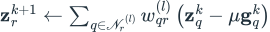

整体概括
同一套观测，换一种网络解法
输入是各接收机本地线性化后的 GNSS 残差；输出分两类：坐标增量、接收机钟差和模糊度等站点自己的状态，以及对全网共享的卫星钟差和硬件偏差。GraT-Diff 的关键是让各站保有自己的观测和局部未知量，只协商卫星项；这里的扩散是邻域迭代优化，不是生成模型。
对照原文证据
We partition the GNSS parameter space at receiver r into two distinct components: a local state \mathbf{x}_{r} (capturing unique parameters such as incremental position, receiver clock offsets, atmospheric delays, and carrier-phase ambiguities) and a shared global state \mathbf{z} (encompassing satellite clocks and hardware biases).We develop a fully decentralized online diffusion strategy that applies the learned mixing schedules to process GNSS observations. By representing local receiver states and global satellite parameters as latent graph signals, each receiver iteratively approaches the centralized solution using only local observations and compact message exchanges with neighboring nodes ( Figure 2 , Right Panel ). As a complementary theoretical result, we also derive convergence guarantees and establish linear convergence rates under the stated assumptions.精度与速度是两项独立证据
论文一方面用同模型的集中式 BLUE 检查分布式解能否回到相同的数值结果；另一方面才用固定权重的梯度跟踪作对照，检查到达同一误差水平所需的迭代。前者不能说明链路更快，后者也不是说定位比集中式更准。两类证据均来自受控数值试验。
对照原文证据
We evaluate the proposed architecture on a global GNSS network constructed from the geodetic coordinates of hundreds of IGS stations and corresponding RINEX navigation data. Numerical results show that the decentralized estimates match the centralized baseline, while converging faster than existing decentralized methods and reducing communication overhead ( Figure 4 ; Figure 5 ). These findings suggest a viable way to address the big-data challenges of large-scale satellite navigation.The validation in this paper is simulation-based. Although the network geometry is constructed from actual IGS station coordinates and the satellite geometry is derived from RINEX navigation files, the carrier-phase and code observables are generated under a controlled measurement model. This setup isolates decentralized optimization error from GNSS modeling errors and allows direct comparison with the centralized BLUE solution; as such, the results do not yet represent a full real-data demonstration.Research gap
站网扩大后，回传与中心处理成为瓶颈
作者的问题不是降低单站观测噪声，而是避免每个站的高维观测都跨网回传，再在单一中心联合估计。传统方案对精密产品有效，但站网密度、星座规模和更新频率同时上升时，带宽、计算、分发时延和中心故障的影响会集中在同一架构上。这是作者设定的工程动机，不是已测得的运营节省。
对照原文证据
Historically, these products are estimated in a centralized manner: observations from global networks of continuously operating reference stations (CORS) are streamed to a single analysis center for joint processing [ 4 , 5 , 6 ] . While effective at current scales, this centralized paradigm is approaching a critical threshold, strained by an exponential increase in data volume and network density.In this context, centralized processing creates severe vulnerabilities, including prohibitive computational complexity, bandwidth saturation from raw data backhaul, and latency in product dissemination. Moreover, reliance on a monolithic analysis hub introduces a resilience bottleneck, where node failures or link congestion can compromise the entire service. To support the next generation of instantaneous, ubiquitous positioning, the computational burden must shift from the center to the edge.从优化单张图改为优化整段信息传播
作者把固定 FMMC 解释为只对一张快照优化的基线；固定矩阵背后要求其瞬时图可连通。GraT-Diff 改为约束整个周期内矩阵乘积对分歧方向的收缩，信息可在多个快照接力传播。单轮允许断开不代表任意持续分区也能收敛，真正承载理论的是有序乘积的收缩。
对照原文证据
The FMMC baseline can be viewed as optimizing the product in ( 2 ) with a window length of \tau=1 , i.e., as a single-snapshot design. Consequently, it requires every instantaneous communication graph to be connected. In contrast, the proposed approach only requires the \tau -block contraction ( \epsilon_{\tau}<1 ), thereby allowing individual snapshots to be disconnected.This relaxes the requirement of instantaneous connectivity and instead promotes effective information mixing over multiple graph snapshots, thus mitigating the communication burden across the network.算法主线

原图由 arXiv 加载；若未显示，可打开下方原图链接。
跟着原图读
- 先看哪里
左半从蓝输入沿 W^(0)、W^(1) 到周期最后一层，看上侧反向箭头标的指数更新与掩膜 Sinkhorn–Knopp，再看最右侧一致的绿色输出。
- 能说明什么
右半黄色 r 位于绿色邻域内，图中本地观测和邻居消息是不同输入，橙色 q 贡献用当前边权。把相同层序循环代入右侧，才能看懂离线矩阵如何成为在线调度。
不能推出什么：这是机制图，没有定位坐标轴或误差数字；左端图的绿色输出不证明对任意时变链路能精确有限时间求解。
离线阶段只看图，训练的是通信权重
用一组邻接掩膜表示轮流可用的链路，把各轮的调度矩阵相乘看成深度线性网络。反向传播更新的是矩阵元，再经指数梯度、掩膜和交替行列归一化，保证非负、无边处为零，并尽量恢复双随机性。训练不回归卫星参数，也不以接收机坐标真值当训练标签。
对照原文证据
The offline learning stage does not learn GNSS parameters from data. Instead, it learns how information should be mixed across the receiver graph. Mixing weight sequence \theta can be learned by solving the surrogate problemAs we can see, gradients \{\nabla_{\mathbf{W}^{(l)}}\mathcal{L}\}_{l=0}^{\tau-1} could be computed by backpropagation through the product. The main difficulty is enforcing, at every layer l , (i) nonnegativity, (ii) the graph-induced sparsity pattern, and (iii) double stochasticity. To address this, we apply an exponentiated-gradient (multiplicative) step—preserving nonnegativity—followed by a masked Sinkhorn–Knopp projection [ 33 , 34 ] —preserving sparsity and imposing double stochasticity. Given the current loss \mathcal{L} , the updates are在线每站先适配再混合，再更新跟踪器
每轮按周期选当前权重。各站用梯度跟踪器对本地卫星参数副本做下降，混合邻居下降后的副本；在更新后的卫星副本上精确求本站的条件最小二乘，再用邻居跟踪器的混合值加本站新旧梯度之差。这样可以从局部观测逼近全网目标，而不是对站点位置或原始观测做平均。
对照原文证据
Equipped with the learned weight sequence \theta , the GraT-Diff algorithm solves ( 4 ) iteratively. At iteration k , each receiver node r maintains a state variable \mathbf{z}_{r}^{k} and a gradient tracker \mathbf{g}_{r}^{k} . The update cycle proceeds in three stages: consensus-based descent, local variable recovery, and gradient tracking adaptation.First, the receivers update \mathbf{z}_{r}^{k+1} by combining neighbor information with the descent direction provided by the tracker. Second, the local auxiliary variable \mathbf{x}_{r}^{k+1} is recovered via the closed-form solution to the local subproblem \min_{\mathbf{x}_{r}}f_{r}(\mathbf{x}_{r}|\mathbf{z}_{r}^{k+1}) . Finally, the tracker \mathbf{g}_{r}^{k+1} is updated to estimate the global gradient mean. The full update laws are:where l=k\%\tau (i.e., k\bmod\tau ), \mu>0 is the stepsize, and the tracker is initialized as \mathbf{g}^{0}_{r}=\nabla_{\mathbf{z}}f_{r}(\mathbf{x}_{r}^{0},\mathbf{z}_{r}^{0}) .为何需要给本站留权重
不同站看到不同的卫星和信号，局部矩阵可能相差很大。作者将每层与单位阵作等权混合，保留自环以避免丢掉本站独有的信息。掩膜为对称且对角线为正时，作者给出 Sinkhorn–Knopp 所需的全支撑论证；网络若改为单向、异步或完全不同的掩膜，需要另查归一化与收缩，不能照搬。
对照原文证据
In our settings (namely, \mathbf{M}^{(l)} is symmetric and [\mathbf{M}^{(l)}]_{rr}=1 for all r ), every positive entry of \mathbf{M}^{(l)} lies on a positive diagonal: diagonal entries belong to the identity permutation, and off-diagonal pairs (r,q) and (q,r) belong to a permutation that swaps r and q while fixing all other indices. Hence \mathbf{M}^{(l)} has total support, and so does \widetilde{\mathbf{W}}^{(l)} .consequently, a collapsed main diagonal (zero self-loop) is detrimental, as it implies a node completely discards its own unique construction in favor of neighbor averages. A simple way to solve this is to replace \mathbf{W}^{(l)} with its lazy version \frac{\mathbf{W}^{(l)}+\mathbf{I}}{2} in \mathrm{NN}(\cdot|\theta) , which can be interpreted as adding a residual connection [ 36 ] to the deep linear network.关键公式
先确定共享量，再消去站点未知量
未差载波与伪距在频率、卫星、接收机和历元上都有索引，电离层对载波和伪距的符号相反。把可辨识的组合分成各站块与公共卫星块后，局部噪声以协方差加权；附录从条件最优的站点解出发，将迭代分析缩到卫星变量。实现时应先验证参考约束与局部几何秩。
对照原文证据
We partition the GNSS parameter space at receiver r into two distinct components: a local state \mathbf{x}_{r} (capturing unique parameters such as incremental position, receiver clock offsets, atmospheric delays, and carrier-phase ambiguities) and a shared global state \mathbf{z} (encompassing satellite clocks and hardware biases).Consider a receiver network with nodes r=1,\ldots,R . Each node r collects an observation vector \mathbf{y}_{r} consisting of observed-minus-computed, undifferenced carrier-phase and pseudo-range measurements. The measurement noise \mathbf{n}_{r} is assumed to have zero mean, \mathbb{E}(\mathbf{n}_{r})=\mathbf{0} , and covariance \mathbf{Q}_{r} , with \mathbb{C}(\mathbf{n}_{r},\mathbf{n}_{r^{\prime}})=\delta_{rr^{\prime}}\,\mathbf{Q}_{r} , where \delta_{rr^{\prime}} denotes the Kronecker delta.It is important to note that \mathbf{x}_{r} and \mathbf{z} represent identifiable parameterizations derived from the original undifferenced observation model in ( 3 ). These parameterizations preserve the physical interpretability of the underlying parameters while ensuring full rank of the network design matrix.图混合快不等于任意步长都稳定
学习目标用矩阵的 Frobenius 范数平方做代理，周期收缩看的是谱范数。补充材料又把站间分歧、跟踪器分歧和网络均值的最优性误差绑到同一个块递推；只有局部光滑、全局强凸、矩阵满足块收缩并且步长落在充分界内，才有文中的线性收敛保证。
对照原文证据
Here \epsilon_{\tau}<1 is the spectral contraction factor over the window, with smaller values implying stronger contraction and faster consensus for fixed \tau .and represent ( S18 ) by \mathbf{v}_{i}\leq\bm{\mathcal{H}}(\omega)\mathbf{v}_{i-1} , thus indicating that convergence holds if the spectral radius \rho(\bm{\mathcal{H}}(\omega))<1 . However, the complexity of \bm{\mathcal{H}}(\omega) makes \rho(\bm{\mathcal{H}}(\omega)) less explicit,Consequently, \|\mathcal{C}^{k}\|\to 0 , \|\mathcal{T}^{k}\|\to 0 , and \|\mathbf{s}^{k}\|\to 0 , the global state \mathcal{Z}^{k} converges to the exact minimizer \mathbf{1}\!\otimes\!\mathbf{z}^{\star} linearly.线性化观测怎样拆开站点与卫星
残差在本站接收机状态与各站共用的卫星参数之间分账。观测与噪声均可用等效距离表示；钟差与相位周数需经光速或波长转换才能叠加。
符号与实现提醒
- y_r, n_r
- 本站 O−C 观测及噪声向量
- A_r, B_r
- 局部与全局分量各自的设计矩阵；行数是本站观测维数
- x_r, z
- 接收机局部参数；全网共同卫星参数
具体哪些变量进卫星块由定基准与可辨识参数化决定。例：固定参考卫星偏差后，其他站的同一卫星项才能在共同坐标中混合。
一个通信周期能消掉多少分歧
按时间顺序将无量纲混合矩阵相乘，与均匀全网平均矩阵作差并取谱范数。若输入已全网一致，双随机矩阵保持该分量；收缩衡量偏离平均的方向。
符号与实现提醒
- W^(l)
- 第 l 个 R×R 行列和为一、受掩膜约束的权重
- τ, R
- 混合周期以轮计；R 是节点数
- ε_tau
- 周期谱收缩，非训练目标的 Frobenius 平方，也不是 GNSS 误差单位
矩阵一般不能换序。作者报告 0.68 意味着对纯混合而言，最坏的分歧向量幅度在该整块后至多是起始的 0.68 倍；不是带梯度在线精度的固定倍率。
适配后混合：调度网络真正交换什么

邻站 q 先按自己的梯度跟踪量做一步更新，再由 r 以当前权重组合，得到本轮卫星参数副本。若仅保留自环，公式就退化为本站单独走下降步。
符号与实现提醒
- z_q^k, g_q^k
- 邻站共享参数的副本及同维跟踪量
- w_qr^(l), N_r^(l)
- 当前轮的邻域权重及允许混合的邻居
- μ, k
- 在线步长；k 是迭代计数，不是观测历元
这是算法 2 中与式 (7) 首行等价的原始更新。只发送共享状态相关向量，不发送本地接收机状态；在线步骤 μ 和离线投影训练 η 不能互换。
跟踪全网梯度，不仅跟踪平均状态
先混合邻居跟踪量，再加本站梯度的一步差；如果本站梯度没变，新增校正为零，只做邻域混合。双随机与正确初始化支撑网络均值等于当前各站局部梯度的平均。
符号与实现提醒
- g_r^(k+1)
- 新一轮梯度跟踪向量
- ∇_z f_r
- 本地目标对共享状态求偏导
- x_r^(k+1), z_r^(k+1)
- 条件最小二乘所得站点解与新卫星副本
本站梯度须在新旧各自对应的条件最优站点解上评估。共同梯度量纲由卫星参数和加权残差决定；收到配置不一致的卫星维度不能直接混合。
补充材料给的是按块的几何收缩上界
作者把三个误差的周期内最大值合并，给出以块索引为指数的上界。好图减小分歧并有助于允许的步长；上界常数不等于从曲线拟合出的经验斜率。
符号与实现提醒
- C_i, T_i, S_i
- 网络分歧、跟踪分歧和均值最优性误差的块内最大范数
- m, τ, μ
- 全局强凸常数、周期长度、在线步长；mτμ 无量纲
- ϱ, i
- 正的界常数、块索引
只在定理的光滑、强凸和周期收缩假设及充分步长条件下使用；常数可较保守。这里的线性收敛指按块几何衰减，不是误差与迭代次数呈普通线性关系。
实验怎么做
真实几何不等于真实码相观测
用 IGS 站坐标建图，以 RINEX 导航文件生成多星座几何和模拟观测；文中验证用到 GPS、GLONASS、Galileo、北斗共 105 颗卫星。图示是取自 IGS 坐标的 100 节点、182 边实例，不把这个快照节点数转述成对整个收录站网的精确计数，也不把广播导航文件当实测载波。
对照原文证据
We validate the proposed GNSS network using simulated measurements from 105 satellites across the GPS, GLONASS, Galileo, and BeiDou constellations, derived from RINEX navigation files. Our method, GraT-Diff , integrates a standard online GT algorithm (see Methods for details on the algorithm) with learned, graph-aware mixing weights \theta .Fig. 1: Decentralized GNSS receiver network used in this work: a sparse, global graph with 100 nodes placed at selected IGS station locations. Red points denote nodes; black lines denote communication links. The depicted communication pattern yields a graph characterized by 182 edges, a diameter of 12 , and a radius of 10 .The validation in this paper is simulation-based. Although the network geometry is constructed from actual IGS station coordinates and the satellite geometry is derived from RINEX navigation files, the carrier-phase and code observables are generated under a controlled measurement model.离线训练与在线冷启动分开计数
按图的直径与半径选周期 15；离线混合权重均匀初始化，指数梯度步长为 8×10³，训练上限 3×10⁴；在线卫星偏差副本从零开始、步长 0.015，上限 10⁴ 轮。参考卫星偏差固定为零用于可辨识性，整周不固定。这里不是监督训练的训练／测试划分。
对照原文证据
We therefore select \tau=15 , which lies between the graph diameter and approximately twice the graph radius, consistent with guidance from finite-time consensus results.To produce Figure 3 , we choose the step size \eta=8\times 10^{3} , the maximum iteration \mathcal{K}=3\times 10^{4} , and uniform initialization [0,1] on each \mathbf{W}^{(l)} , followed by the lazy transform \frac{\mathbf{W}^{(l)}+\mathbf{I}}{2} as previously mentioned.Finally, to produce Figure 4 and Figure 5 , we choose a stepsize \mu=0.015 , initialize each node’s state \mathbf{z}_{r}^{0}=\mathbf{0} and limit the number of iterations to K=10^{4} .We define the local state vector \mathbf{x}_{r} to encompass the receiver’s incremental position, clock bias, and float ambiguity terms, leaving integer ambiguity resolution for a subsequent processing stage. The global consensus variable \mathbf{z} captures the satellite-specific biases, with the first satellite fixed as a reference (bias set to zero) to ensure identifiability of the problem.固定权重消融、集中式参照与复现入口
两套固定权重基线共享梯度跟踪框架和图示通信模式，分别用 Lazy Metropolis 和以半正定规划设计的 FMMC；集中式参照是 C-BLUE，不拿它作为固定权重消融。此固定版的数据与代码段给出 IGS 与导航输入线索，模拟生成器与复图实现写的是发表时将存档，未在该版提供可直接下载的 DOI。
对照原文证据
We compare GraT-Diff against two diffusion-based counterparts, both implemented within the same GT framework and using the communication pattern shown in Figure 1 . The first uses heuristic Lazy Metropolis weights [ 31 ] , while the second relies on weights obtained from the Fastest Mixing Markov Chain (FMMC) design [ 32 ] , where a single mixing matrix is optimized via semidefinite programming (SDP) simultaneously promoting non-negative eigenvalues.The simulated datasets and the accompanying scenario generator will be deposited in a public repository upon publication (DOI to be provided). The input data consist of IGS station coordinates and multi-GNSS broadcast navigation files, which are publicly available from the respective providers and mirror archives.A reference implementation of GraT-Diff , including Algorithm 1&2 to reproduce the figures, will be deposited in a public repository upon publication (DOI to be provided) under an open source license. Configuration files and environment/requirements files will be included to facilitate reproduction.未获得实用链路成本口径
已读取的固定版未说明等误差阈值下的实测端到端墙钟时长、逐边网络字节数，或离线求权重的硬件、耗时和重复训练方差。对复现者来说，先保存每轮活跃边和状态维数，再报告总传输量与包含离线准备的耗时，比把迭代横轴直接转成低延迟更稳妥。
提升与证据
厘米级误差里，近十亿分之一米差的是方法之间
以 10 个示例历元同真值比较，GraT-Diff 与 C-BLUE 的定位误差最大差为 6.88×10⁻⁹ m，卫星偏差误差最大差为 5×10⁻⁹ m（等效传播距离），均在历元 5。定位误差是文中的平均相对定位误差，卫星偏差误差是平均绝对误差；这两项差不是对真值的位置精度。
对照原文证据
Fig. 4: Accuracy evaluation between GraT-Diff and centralized solution (C-BLUE), exemplified by 10 epochs, containing local receiver’s positioning error e_{\mathrm{pos}} and global satellite-bias error e_{\mathbf{z}} . We report e_{\mathbf{z}} in light-travel distance (equivalent range) units for consistency. Here, the maximum difference of e_{\mathrm{pos}} and e_{\mathbf{z}} between GraT-Diff and C-BLUE are 6.88\times 10^{-9} m and 5\times 10^{-9} m, respectively, occurring at epoch 5.Performance was benchmarked against the centralized Best Linear Unbiased Estimator (C-BLUE) [ 29 ] utilizing two standard metrics relative to ground truth: the average relative positioning error e_{\mathrm{pos}} and the mean absolute satellite bias error e_{\mathbf{z}} .表中的统计一致性不是距离单位
Table I 用集中式精度矩阵度量相对于真值的卫星偏差；两方法 Mahalanobis 距离绝对差在 4.91×10⁻¹⁰ 至 3.42×10⁻⁸ 之间。它比较的是协方差白化尺度下的统计一致程度，不能把表里的差标成米，也不能把个例组成的每历元表当跨季节的定位置信区间。
对照原文证据
This equivalence is further corroborated by the Mahalanobis distance [ 30 ] d_{M}(\mathbf{z}) against ground truth (Table I ), which utilizes the centralized precision matrix \mathbf{\Sigma^{-1}} (see Methods on Remark 3 for the formal definition) to assess statistical consistency. As detailed in Table I , the divergence between the distributed and centralized solutions is restricted to the magnitude range [4.91\times 10^{-10},3.42\times 10^{-8}] , indicating extremely tight statistical agreement.更陡的下降来自同一梯度跟踪框架内的对照
在代表性历元 7，作者报告三条分歧或优化指标更快衰减：相对集中解的均方偏差、平均梯度范数、网络分歧范数。周期为 15 时，所学权重的块收缩因子为 0.68，固定 Lazy Metropolis 与 FMMC 对照约为 0.86、0.75。轮次上的优势支持同容差下少交换，不提供链路实测字节减幅。
对照原文证据
To characterize both optimization and consensus behaviour, we monitor three per-iteration metrics: (i) the mean-square deviation (MSD) from the centralized solution, (ii) the average gradient norm, serving as a proxy for first-order optimality; and (iii) the network disagreement norm, quantifying the deviation of local nodes from the global average (see Supplementary Information for formal definitions).The resulting fixed weight matrices have second-largest eigenvalues of 0.989 and 0.979 , corresponding to approximate \tau -step contraction factors of \epsilon_{\tau}\approx 0.86 and 0.75 , respectively.Furthermore, our learned \tau -periodic schedule achieves \epsilon_{\tau}=0.68 for \tau=15 , which is expected to lead to faster consensus. To illustrate, we report the convergence results for a representative epoch (epoch 7). As shown in Figure 5 , GraT-Diff exhibits a markedly steeper linear decay in all three metrics than either of the baselines, with theoretical justification provided in the Supplementary Information .不要把结构表当第三组收敛曲线
Table II 对比另一种基于 ADMM 的全球改正数方案：作者总结自身方案不需要重叠的约束节点簇及簇内硬平均，并显式支持时变图；两栏都列有收敛。它支持算法组织上的不同，不是同一数据、同一容差、同一硬件下量出的 ADMM 用时、交换轮数或鲁棒性差距。
对照原文证据
Framework Ours Khod.&Teunissen [ 18 ] Constraint set N ✓ Y ✗ Cluster averaging N ✓ Y ✗ Time-var. graph Y ✓ N ✗ Convergence Y ✓ Y ✓The approach in Khod.&Teunissen [ 18 ] typically relies on a hand-crafted, overlapping set of constraint nodes to enable intra-cluster hard averaging and promote convergence in practice. For large, time-varying networks such as in Figure 1 , however, constructing and maintaining these overlapping clusters can be fragile, and may require manual retuning as the topology or receiver set evolves.
原图由 arXiv 加载；若未显示，可打开下方原图链接。
跟着原图读
- 先看哪里
横轴是历元，纵轴是厘米（等价于 10⁻² m）。上组青方框对红五边形是定位误差；下组绿圆对橙星是卫星偏差等效距离。先在同组、同历元比较两种标记。
- 能说明什么
两组标记在绘图精度内分别覆盖，峰谷同步。第 5 历元处两方法小差距来自图注，不是从重合像素读出的；另用 Table I 检查白化统计一致性。
不能推出什么：不能拿上、下曲线相减当改正收益；也不能把图注纳米量级的「两方法差」解释成纳米级定位。

原图由 arXiv 加载；若未显示，可打开下方原图链接。
跟着原图读
- 先看哪里
三图横轴单位为百轮，论文从第 100 轮画起。先读三图标题：左对集中解的 MSD，中间梯度范数，右网络分歧；纵轴均对数，但量级和含义不能混合。
- 能说明什么
在相同子图和阈值下，对照红色 GraT-Diff、绿色 FMMC SDP、青色 Lazy Metropolis 就能看出更快下探；代表历元是第 7 历元，而非把多历元曲线取平均。
不能推出什么：原 PNG 的图例在手机上应放大；不由像素报某阈值的精确轮数。图不测带宽、物理时延或失包，且开头百轮不在画面。
局限与追问
作者范围：模拟观测、浮点与每历元批处理
作者明确区分真实几何和受控观测。当前是浮点模糊度估计，未处理整数固定；卫星系统间偏差未作独立状态，观测加权也被简化。每历元内批量求解的步骤，不能自动继承到异步流式、丢包、延迟或量化后，更不是已上线的纠正流或独立终端的定位验证。
对照原文证据
Furthermore, the present framework operates on the float ambiguity estimation problem and does not explicitly include integer ambiguity resolution. A real-data evaluation with robust preprocessing, distributed ambiguity management, and operational correction-product generation therefore remains an important direction for future work.In addition, practical deployments must account for system-level impairments such as communication delays, asynchronous updates, bandwidth constraints, and message quantization. These factors may affect the effective information-mixing rate and introduce stale or incomplete updates, motivating extensions based on delay-robust gradient tracking, asynchronous diffusion, compressed communication, and adaptive graph scheduling. The present work focuses on batched network estimation within each epoch.In the present simulations, inter-system bias states between different GNSS constellations are not modeled explicitly. Instead, these effects are treated implicitly through the simplified receiver clock and hardware-bias terms adopted in the observation model. In addition, the stochastic observation model employs simplified weighting and does not explicitly incorporate constellation-dependent stochastic modeling across GPS, GLONASS, Galileo, and BeiDou observations.进一步追问：计划图被换掉，还能快吗？
作者描述链路失效时可切到 Metropolis 权重，但理论所用的周期矩阵整体收缩未必由实际到包序列保留。建议分别重放独立失包、站群一同掉线和高延时恢复；记录实测混合矩阵行列和、周期乘积收缩、同容差完成率及最坏恢复时间，并和静态基线在同等局部数据下比较。
对照原文证据
Once the link is restored, it automatically resumes the learned mixing schedule \theta . Such link interruptions are commonly studied in highly unreliable communication environments, where the resulting time-varying topology is used to model random communication failures rather than to optimize information exchange. Under the B -connected graph assumption, convergence can still be guaranteed even in this worst-case setting, although such analysis does not provide improvements in convergence rate or communication efficiency, as established in [ 31 ] .连接你的研究
先在 CORS 回放中隔离网络误差
可在同一批实测 RINEX 和同一套预处理上冻结星历、模型、观测筛选与权重，先做集中式浮点参考，再跑固定权重和学习周期。按站数、星座可见性、丢包轮廓分层，交付同一卫星产品误差阈值下的总字节、完成时间分位数和未收敛历元比例；用集中式同输入排除建模差异。
再做与估计网络分离的用户侧实验
对离网流动站分别重放同时间戳的集中与分布式改正流，在常态、长基线与链路中断恢复阶段比较水平／垂直误差、正确固定率、错误固定率、首次固定时间和改正数龄期。先验证数值等价，再解释改正数延迟与终端完好性，不能拿参考站自定位误差替代。
来源与边界
原图来自所读固定版本的 arXiv 官方图源，仅外部链接与嵌入用于逐图评述，不镜像图片、PDF 或全文。该版本标示 arXiv 永久非独占分发许可，不是 CC BY，不授予读者另行转载权；如需再使用请向权利人确认。另核对了 npj Wireless Technology 期刊版（DOI 10.1038/s44459-026-00063-w）页面的 CC BY 4.0 声明；并不把该声明移植为 arXiv v3 许可。
对照原始英文摘要
收录历史：2026-10-20
原文许可：查看本版本许可 ↗；外部嵌入不等于任意转载授权。